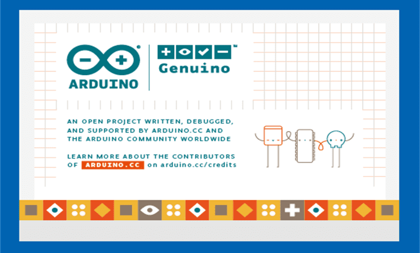
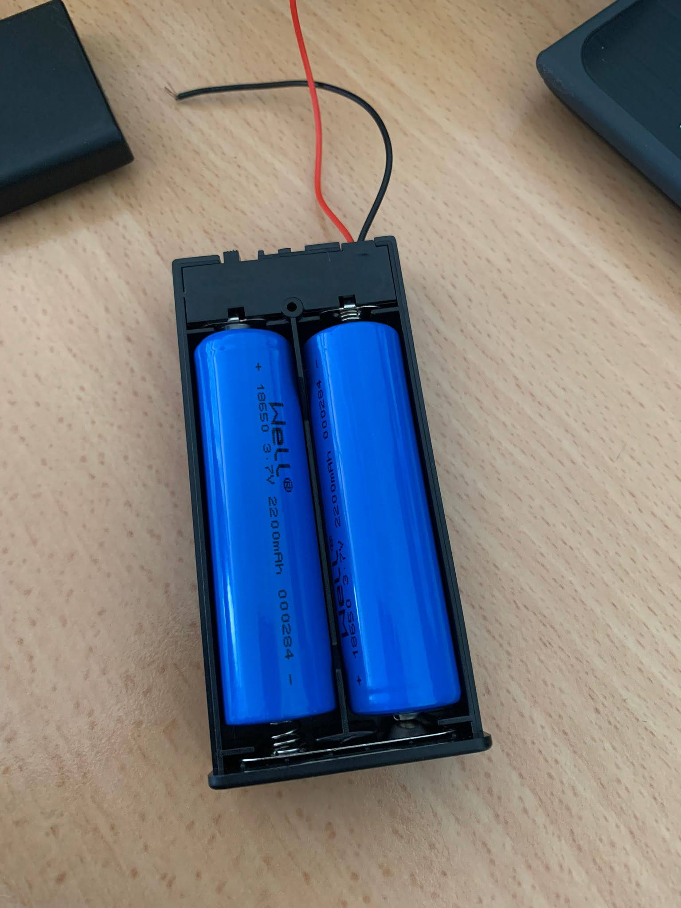

Manual de usuario
Primer Paso
Este paso constará de abrir el programa Arduino IDE

Segundo Paso
En este paso una vez estemos en la interfaz grafica del programa pondremos el codigo deseado

Tercer Paso
Una vez puesto el codigo le daremos a verificar, que es el icono de arriba a la izquierda
Esta función lo que hace es decirte si el codigo tiene algun fallo de estructura, o algun fallo de variables
Quarto Paso
Una vez verificado el codigo pasaremos a subirlo al Arduino

Una vez subido si lo hemos verificado no tendriamos que tener problema para ejecutarlo como corresponde
Quinto Paso
Una vez verificado y subido el codigo tenemos que encender la batería y disfrutar de como se mueve nuestro robot

(Warning:Recuerda tener las pilas cargadas que sino no anda)